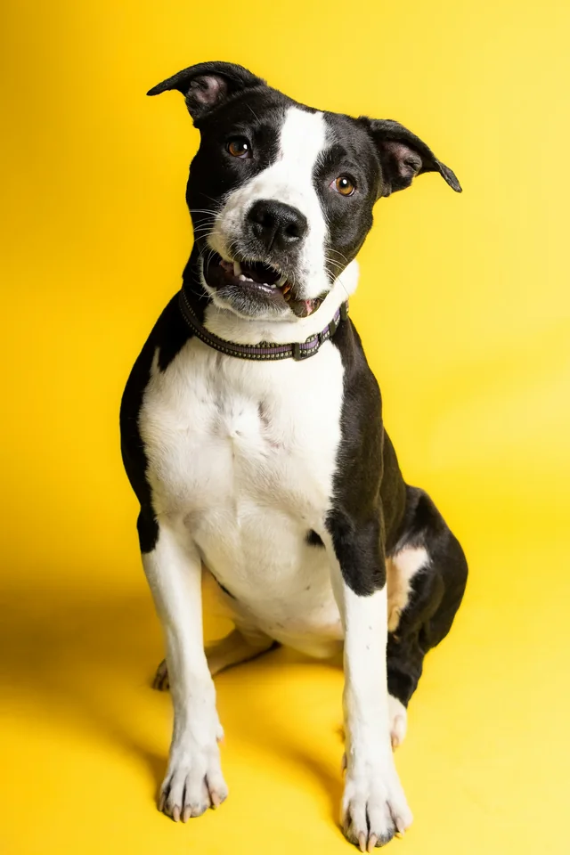
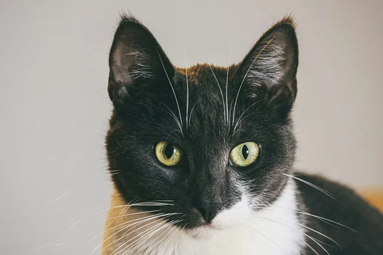
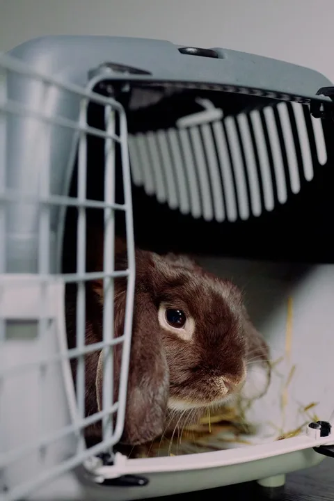

Viagens internacionais com pets
A viagem é de vocês.
Você escolhe o destino. A Global VetPass orienta a documentação e o preparo do seu pet para atravessar fronteiras.




Sobre a Global VetPass
A viagem começa antes da mala.
Para você, é uma viagem em família. Para o seu pet, cada fronteira traz perguntas próprias.
A Global VetPass ajuda a entender o que o destino exige e a organizar cada documento, com orientação veterinária e atenção à história de cada animal.
Conheça a GVPPlanejamento da viagem
Avaliamos origem, destino e possíveis conexões para entender o que precisa ser preparado para o seu animal. Se as datas ainda estão em aberto, podemos começar pelo itinerário em estudo.
Orientação documental
Ajudamos a identificar os documentos solicitados para o trajeto e a organizar os registros que você já tem. A lista considera a espécie do animal e as particularidades do destino.
Preparação sanitária
Orientamos sobre as exigências sanitárias aplicáveis à viagem. Com essas informações, você pode organizar os cuidados necessários com o médico-veterinário que acompanha seu pet.
Orientação para o embarque
Ajudamos a identificar os pontos a confirmar com a transportadora, como as condições de aceitação e as especificações da caixa de transporte para o trajeto escolhido.
Como funciona
Do primeiro plano ao embarque.
O ponto de partida é uma conversa sobre o seu animal. A partir dela, organizamos as etapas de acordo com o itinerário e com o que vocês já têm em mãos.
Conhecer as etapasPróximo destino
Para onde vocês vão?
Conte um pouco sobre seu pet e a viagem que está planejando.